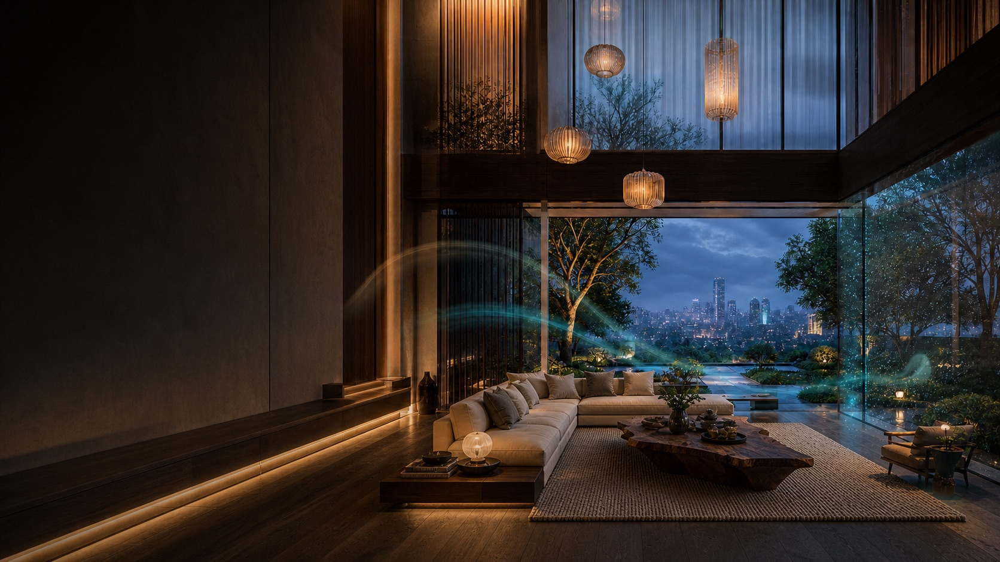
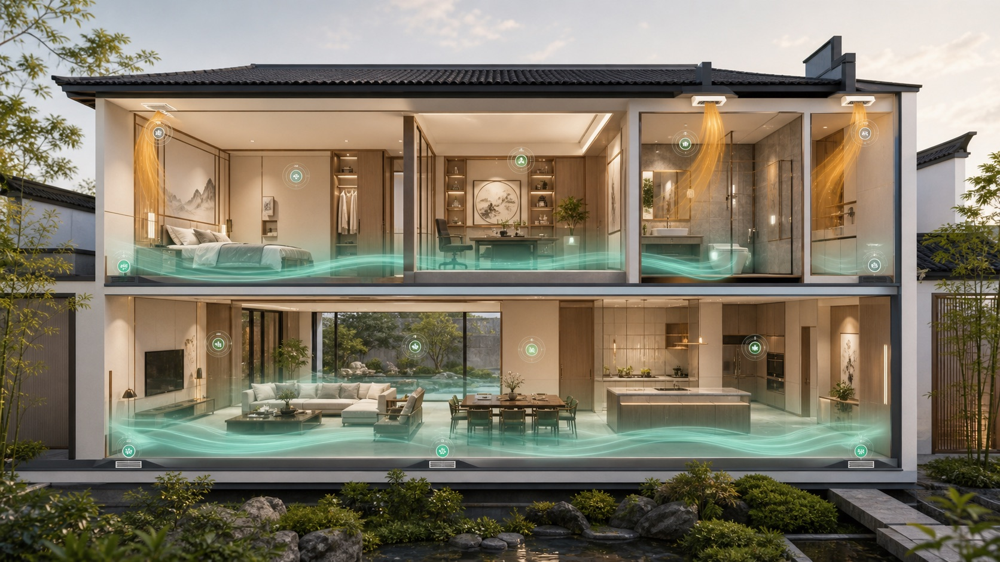
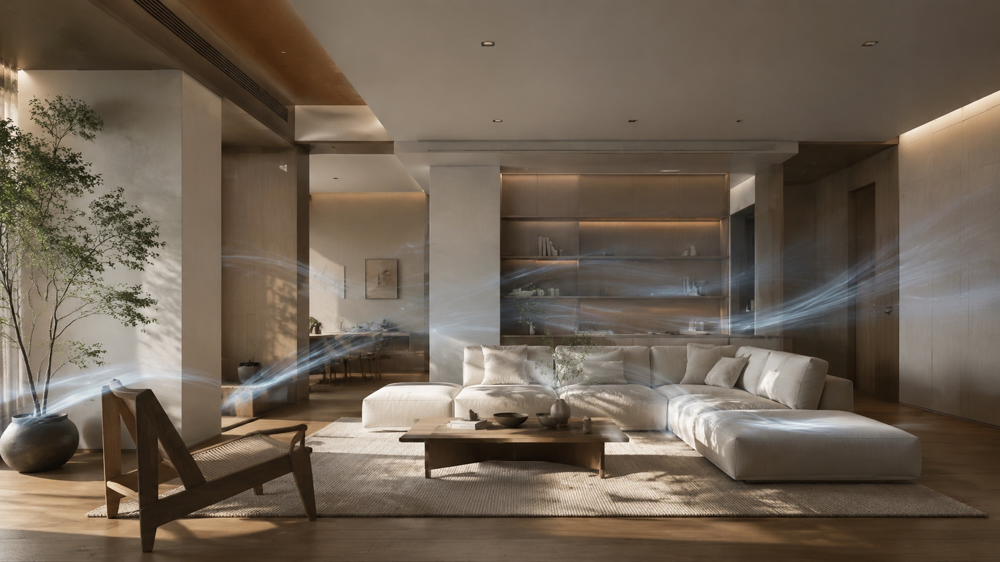
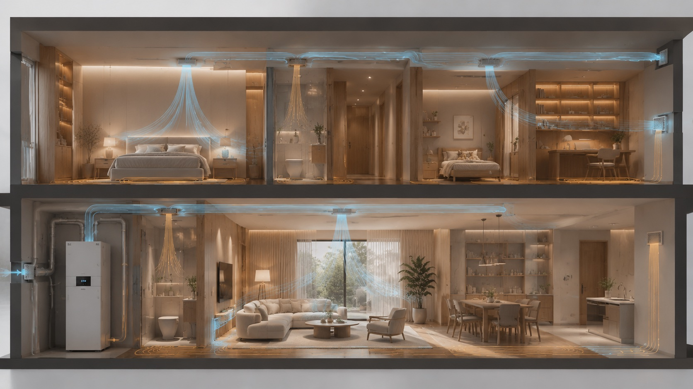
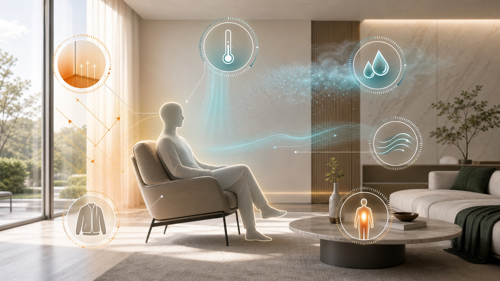
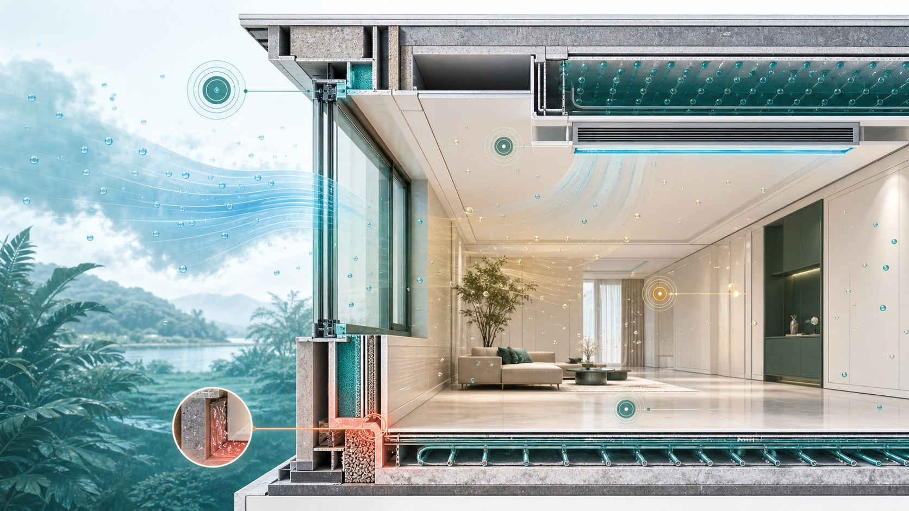
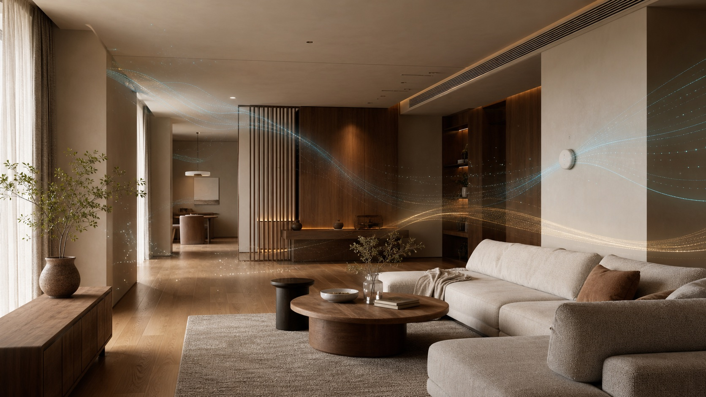
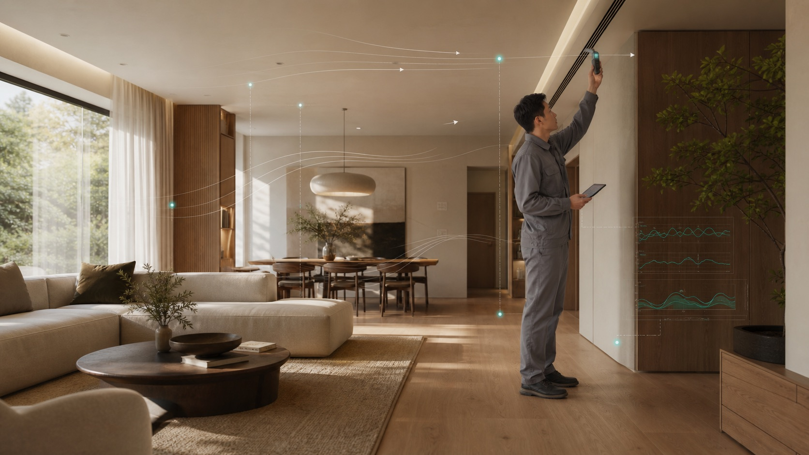
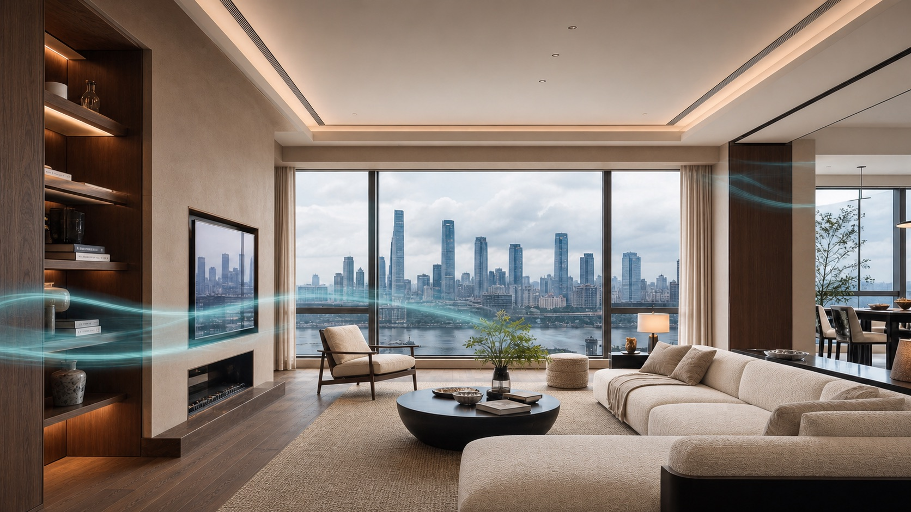
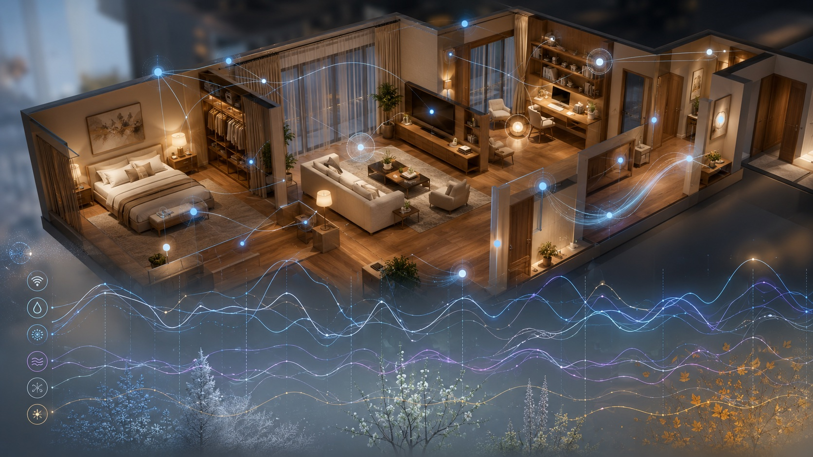

A HOME WITH ITS OWN INDOOR CLIMATE
我的五恒住宅
门窗关闭以后，住宅依然温和、干爽、新鲜、洁净、安静。
恒温恒湿恒氧恒洁恒静
五恒不是五台设备，而是一套可以被身体感知、也可以被数据验证的住宅室内气候。

A HOME WITH ITS OWN INDOOR CLIMATE
门窗关闭以后，住宅依然温和、干爽、新鲜、洁净、安静。
五恒不是五台设备，而是一套可以被身体感知、也可以被数据验证的住宅室内气候。

CHANGSHA RESIDENTIAL CLIMATE
冷暖只是表层。高含湿量、露点拖尾、冬季湿冷、关窗后的空气更新与噪声矛盾，才是住宅室内气候难以长期稳定的原因。
室外含湿量持续偏高，开窗并不能解决潮湿，反而可能把湿负荷带入室内。
温度降下来了，汗液蒸发和体感仍可能不轻盈；低温不等于干爽。
空气、墙面与窗边表面温度共同影响体感，地面温暖并不自动等于全身舒适。
住宅越追求安静、密闭与高品质装修，越需要持续、有组织的空气更新。
THE OLD WAY
空调处理显热，地暖改善冬季脚感，普通新风完成换气；但湿度、露点、压差、过滤、噪声与分空间控制经常被分散处理。
FIVE VERIFIABLE OUTCOMES
空气温度与表面温度连续稳定，减少冷热波动、局部冷感与强风感。
室温垂直温差表面温度主动处理潜热和含湿量，让露点远离冷表面与围护结构风险区。
相对湿度含湿量室内露点持续有组织地更新空气，以新风量和CO₂趋势判断通风是否真正有效。
设计新风量CO₂趋势通过过滤、压力组织和排风协同，持续控制颗粒物、异味与污染迁移。
PM2.5过滤等级房间压差系统低存在感运行，不以明显噪声和送风扰动交换其他四项结果。
背景噪声末端声级风速以上为设计与验收的指标框架，不是脱离项目条件的统一承诺值。具体目标应结合建筑围护结构、人员密度、房间用途、室外气候和末端路线校核。
THE VALUE OF FIVE-CONSTANT LIVING
技术路线不应只停留在设备图纸里。它最终要转化成四季温和、湿度舒爽、无明显直吹、空气洁净、环境安静，以及可感知、可管理的日常体验。
冷热连续而柔和，减少房间之间和垂直方向的明显温差。
温度与湿度分别处理，不用过度降温掩盖空气中的水汽。
让人体主要停留区域远离高速冷风和局部热风扰动。
持续过滤、补充与组织新风，把污染物和异味有序带走。
将设备、风口与管路噪声作为设计目标，而不是入住后的补救。
设备与末端服从室内设计，让环境系统保持低存在感。
温湿度、CO₂和空气状态持续可见，控制不再只靠主观感受。
运行策略、维护计划和远程服务共同决定系统能否长久稳定。
A WINDLESS FOUR-SEASON HOME
传统空调主要依靠空气高速循环完成换热，人体容易感知出风温度、风速和局部温差。五恒住宅强调空气温度、表面温度、湿度与末端共同协同，让冷热不必以强烈风感出现。
A BREATHING HOME
空气组织决定了新风是否真正经过人的呼吸区域。项目可根据建筑条件采用适合的送回风与排风路线，使洁净空气先服务于卧室和公共空间，再将热湿、异味和污染物引向排风区域。

价值表达参考慧科技五恒系统官方体系，并结合长沙、衡阳等湖南地区的高湿气候和住宅项目设计逻辑重新组织。具体温湿度、能耗、风速与过滤目标以项目设计条件和厂家技术文件为准。
AIR IS THE SOUL OF A HIGH-QUALITY HOME
人未必看得见空气如何流动，却会直接感到闷不闷、黏不黏、有没有吹风感、空气是否清新，以及夜晚够不够安静。五恒不是五套彼此独立的设备：风系统是贯穿五种结果的公共主线，冷热末端则负责补足表面温度与显热需求。

减少局部温差，并与辐射、地暖等冷热末端协同。
先把水汽处理清楚，避免用过度降温换取干爽。
让洁净室外空气经过人的呼吸区域，而不是只在设备旁循环。
控制颗粒物、异味与污染迁移，把脏空气送到该离开的地方。
从风量、风管、风口到机房共同降低风噪与设备存在感。
THE DOAS CORE
DOAS（Dedicated Outdoor Air System，独立新风系统）不是再增加一台普通新风机，而是把室外空气独立处理：按设计风量引入、过滤，并对湿负荷和送风露点进行控制，再与住宅冷热末端协同。
新风量不再依赖室内循环负荷，以 CO₂、人数和空间用途验证通风是否有效。
把潜热与显热解耦，管理含湿量和露点，尤其适合长沙、衡阳等高湿地区。
连接送回排风、过滤、压差和末端控制；DOAS 是组织者，但不是脱离冷热末端独自完成五恒。
NOT ALL AIR SYSTEMS DO THE SAME JOB
看见风口，不等于系统已经处理了新风量、湿负荷与露点。真正的区别，在于空气从哪里来、经过什么处理，以及是否与冷热末端共同受控。
以室内循环空气为主，擅长显热处理；持续新风、湿负荷和完整空气品质通常需要其他系统配合。
可以更新空气，但在高湿天气下，未必具备独立、稳定的除湿能力和送风露点控制。
把新风量、过滤、潜热和露点纳入同一条空气主线，再与地暖、辐射或其他冷热末端协同。
DOAS SYSTEM ROUTE
当空气的来源、水汽、洁净度与流向被系统化管理，风盘、冷梁、地暖或地面调温等末端才能按项目条件各司其职，而不是继续叠加互不理解的设备。

先确认温湿度、新风、洁净、噪声和分空间使用目标。
组织室外空气、过滤、新风除湿、送风、回排风与压差。
将湿负荷从显热处理中解耦，避免以过度降温代替除湿。
根据建筑、层高、装修和使用习惯选择合适的末端组合。
卧室、公共区、厨房与卫生间按负荷和压力关系分别控制。
COMFORT SCIENCE

空气温度、平均辐射温度、湿度、气流速度、着衣量和代谢率共同决定体感。空调显示温度达标，不等于舒适已经成立。

当空气或表面温度接近露点，冷表面、风口和围护结构的结露风险上升。高湿地区必须同时管理温度与空气中的水汽。
“五恒”不是上述标准的原文术语，而是住宅室内环境目标在中文语境中的综合表达。标准用于建立设计边界和验证方法，不替代具体项目计算。
MEASURABLE INDOOR ENVIRONMENT
同一个“闷、黏、冷、吹、吵”，可能来自完全不同的环境变量。专业判断必须同时看数值、持续时间、空间位置与变化趋势，而不是只看一块面板上的瞬时读数。

人体感受空气温度只代表一部分体感。窗边、墙面和地面的表面温度偏低时，即使温控器显示正常，也可能出现肩背发冷、脚冷或局部不均匀。
标准与判断上述区间为 GB/T 18883-2022 季节性要求。工程上还应同步记录垂直温差与平均辐射温度。
人体感受相对湿度偏高时皮肤蒸发变慢，容易黏、闷、不干爽；偏低时可能出现口鼻、眼睛与皮肤干燥。
标准与判断国标区间来自 GB/T 18883-2022；40–60% RH 是兼顾舒适、干燥感与潮湿风险的住宅运行建议带，不是另一条强制标准。
人体感受露点反映空气实际携带的水汽，不会像相对湿度那样随室温直接波动。露点持续升高时，住宅更容易出现黏闷、冷表面凝露和霉变风险。
标准与判断GB/T 18883-2022 未单列住宅露点限值。12–16°Cdp 为五恒住宅建议运行带；约 16.8°Cdp 是 ASHRAE 55 舒适区上部湿度边界参考。任何时候，冷表面温度都应高于室内露点并保留安全余量。
人体感受久坐、皮肤裸露或空气偏冷时，较高风速更容易形成吹风感、颈肩不适和局部冷感。
标准与判断区间来自 GB/T 18883-2022。应在床、沙发和书桌等人体停留区测量，同时验证新风量不低于 30m³/(h·人)。
人体感受升高时常伴随闷、空气不新鲜、注意力下降或困倦，但不代表已达到 CO₂ 毒性浓度。
标准与判断GB/T 18883-2022 要求 1 小时平均 ≤1000ppm。它主要验证人员相关污染物是否被有效稀释，不代表全部空气品质。
人体反应颗粒物可能刺激呼吸道；儿童、老人以及哮喘和心肺疾病人群通常更敏感。
标准与判断GB/T 18883-2022 为 24 小时平均 ≤50µg/m³；WHO 健康导向值为 24 小时 15µg/m³、年平均 5µg/m³。
人体反应部分 VOC 暴露可能伴随眼鼻咽刺激、头痛、恶心、疲劳或眩晕，不同化合物毒性差异很大。
标准与判断GB/T 18883-2022 要求 8 小时平均 ≤0.60mg/m³。TVOC 总值降低不等于每一种化学物都安全。
人体反应氡无色无味，通常没有可以立即察觉的症状；风险来自长期累积暴露，并与肺癌风险相关。
标准与判断GB/T 18883-2022 年平均参考水平 ≤300Bq/m³；WHO 建议在可行时以 100Bq/m³ 为参考水平。
人体反应噪声不一定把人完全吵醒，也可能导致入睡困难、睡眠片段化、烦扰和第二天疲劳。
标准与判断WHO 建议卧室夜间连续噪声低于 30dB(A)，非连续事件室内峰值尽量低于 45dB(A)。
主要依据：GB/T 18883-2022《室内空气质量标准》；WHO Global Air Quality Guidelines 2021；WHO Indoor Radon 与 Community Noise 指南；美国 EPA VOC 室内空气资料；NIOSH CO₂ 职业暴露资料。人体感受存在个体差异，本章用于住宅环境设计与沟通，不替代医学诊断。
FROM DESIGN TO COMMISSIONING
设备采购只是其中一环。住宅围护结构、湿负荷、风量平衡、管线路由、噪声控制、控制逻辑和现场调试，必须由同一组环境目标贯穿。

在选择设备之前，先判断这套住宅真正面对什么问题，以及家庭希望获得怎样的室内气候。
分析户型、朝向、围护结构、层高、人员数量、房间用途和开窗习惯。
识别显热、湿负荷、露点、空气更新、声环境和设备空间风险。
避免用设备偏好代替项目判断，也避免为不必要的功能增加复杂度。
将“温和、干爽、新鲜、洁净、安静”转化成可以计算、选型和验证的系统条件。
计算新风量、湿负荷和冷热负荷，确定分区、排风、压差和末端组合。
形成设计目标、系统图、主要参数、设备能力和控制策略。
DOAS、冷热末端、排风和控制不再各自运行，而是共同完成住宅气候。
系统能否安静、简洁、可维护，往往在吊顶、管线、风口和检修节点确定时就已经决定。
统筹风管、水管、冷凝水、设备机房、风口、阀件和检修空间。
明确标高、尺寸、定位、保温、消声、检修和室内设计边界。
减少现场碰撞、吊顶压低、风口突兀和后期无法检修的问题。
五恒的关键质量藏在保温、气密、排水、消声和设备安装条件中，不能只看表面完成度。
检查风管气密、管道保温、冷凝水坡度、存水弯、减振和消声措施。
对隐蔽工程、设备基础、检修条件和控制接线进行阶段核验。
降低结露、漏水、噪声、风量不足和后期拆改风险。
系统必须在真实房间和真实使用条件下被测量，确认设计目标已经转化为运行结果。
复核风量、温湿度、露点、CO₂、房间压差、噪声和控制联动。
形成设定值、实测值、控制逻辑、问题整改和最终运行状态。
不是“机器已经开机”，而是住宅环境可以被持续查看和复核。
滤网、排水、换热器、传感器和运行策略会随时间变化，长期表现依赖清晰的维护计划。
根据空气环境和使用时间安排滤网、排水、设备洁净和传感器复核。
保留设定、报警、维护、耗材和跨季运行记录。
家庭知道何时维护、维护什么，也能判断系统表现是否发生变化。
NATIONWIDE RESIDENTIAL APPLICATIONS
五恒系统已经在全国多座城市、不同住宅形态中形成长期应用。泽风将成熟的系统经验带入长沙、衡阳及湖南其他地区，让高湿气候下的住宅环境拥有更完整的本地设计与交付能力。

南京、上海、杭州、宁波、合肥等城市的住宅应用，为不同围护结构、空间尺度和家庭使用方式积累了持续经验。

多楼层、地下空间、挑空客厅与庭院边界，需要分层分区、空气组织、排风关系和维护条件共同成立。

围绕梅雨高湿、过渡季回潮、冬季湿冷和长期关窗空气品质，形成更符合湖南住宅的设计与交付重点。
PROJECT EVIDENCE

每套项目在交付阶段形成温湿度、露点、风量、空气品质与声环境记录，让系统表现能够被持续查看、复核与优化。
IS FIVE-CONSTANT RIGHT FOR MY HOME?
面积不是唯一条件。气候、密闭性、家庭人数、生活方式和装修阶段，往往比单纯的平方米更能决定系统价值。
梅雨、高含湿量、冬季湿冷和过渡季回潮更需要独立管理水汽。
面积大、楼层多、功能复杂时，更需要分区、压差和空气路径设计。
追求安静、安全和室内设计完整度时，有组织的新风成为基础条件。
卧室夜间空气、声环境和长期稳定性值得更连续地观察。
如果需求不只是“冷下来”，五恒才有明确的设计意义。
越早协调设备、管线、层高和风口，越容易兼顾性能与空间美感。
小面积住宅同样可以评估，但应先判断问题是否需要完整五恒路线，避免为了概念而堆叠系统。
A HOME WITH ITS OWN INDOOR CLIMATE
温度、湿度、空气、洁净与安静，不再由彼此分离的设备决定，而是在同一套住宅环境中持续协同。